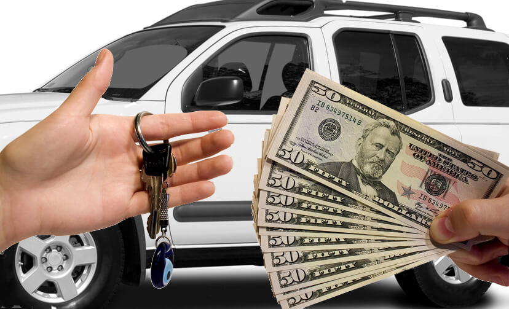

Get leading dollar for your old and unwanted vehicle today with our cash for motor vehicle Perth solution. It is utilized to be typical to have to pay money to deal with your old auto. Nowadays, many vehicle breakers and also scrappers provide free cars and truck ditching and also take the cars for free.
We go one step better! Scrap your car and collect money!
With us, you get up to $9999 if you bring your scrap-ripe automobile over to us. We will even get your lorry at no cost to 50 km from Perth.
We will contact you and also make a visit with you. You will likewise find out immediately just how much money we are paying you for your junk auto.
You bring your lorry over to us or have it picked up by us on request. We will certainly pay you your cash right away.
There's absolutely nothing even more to do - we'll take care of the remainder.
Our car junking brings you some benefits:
On-demand, we can pick up the auto from your front door (absolutely free up to 50 kilometres around Perth).
If you want, we can additionally cancel the automobile for you.
Since we purchase the cars and truck from you, you do not have to fret about points like a certification of damage.
Some car scrapping companies bill cash for this service, although many currently supply free automobile ditching. We come from those who also pay you pay for the auto ditching, as much as $9999. You see, the expenses or rates differ here from offer to offer positively.
With us, you can have any auto, but also, for instance, your mobility scooter or motorbike junked at no cost. We even pay you money for vehicles with an engine - relying on the design and weight approximately $9999. Ask us!

Yes, you possibly listened right. Depending upon the condition (does the cars and truck still have an engine, does the automobile still have a catalytic converter, which model is it?) as well as your scrap automobile's roadworthiness, we will certainly pay you approximately $9999. With us, you can ditch money for your vehicle.
If the auto is generally still in exceptional problem and only has a couple of corrosion areas, it is undoubtedly not worth junking the lorry. Yet if the vehicle is entirely rusted via, then it's time to take it to the scrapyard ... If you are unclear, after that contact us, and we will certainly give you a free estimate of whether it makes sense to ditch it now or otherwise.
As we understand, there is no legal law below. Yet to be on the safe side, you need to keep it for a year all the same. As I claimed, you do not require a certification of destruction with us since we purchase the automobile from you regularly.
Yes! you can still offer your vehicle with us. We purchase an automobile with as well as without rego. So what are you waiting on? Contact us today to obtain your car removal asap.
Certain. Up to 50 kilometres around Perth, we will happily pick up your cars and truck free of charge. We can pick it up in specific cases for longer distances; however, then we can not pay any more cash for the automobile.
Yes, we will also deal with your crash lorry for you. If the crash cars and trucks are no longer roadworthy, we can also pick it up by setup.
Sure. If you do not know where to take your scooter, moped, quad bike, or motorbike, please allow us know. We look after the ditching. Sadly, we can't pay you to cash in this instance ... things are just also little for that. But at the very least, you do not have to worry about the costs of scrapping them. We do that free.
Usually, we ditch vans as well as minibusses at no cost or as well as we will certainly pay you the highest rate for your lorry. Just give us a call, as well as we will certainly arrange it out in an uncomplicated means.
Engine damage is usually no problem for us if we can get the automobile.
Could you bring it to us or have it picked up? We will certainly after that care for all the jobs that occur.
You can find out what the certificate of destruction is right here. But you don't have to worry about that with us, because we acquire the auto from you routinely.
Just your scrap car, as well as your ID. We can choose your automobile with the plates or without the leaves. We care for the rest.